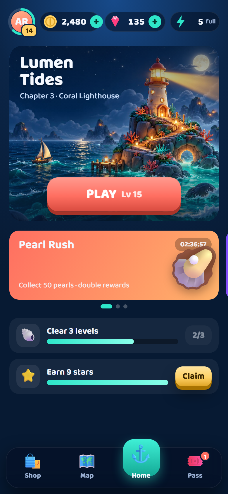
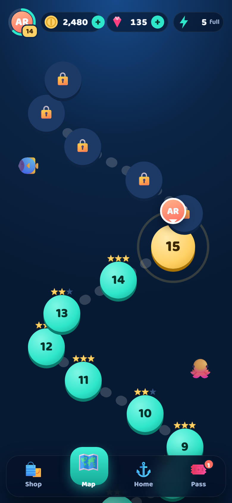
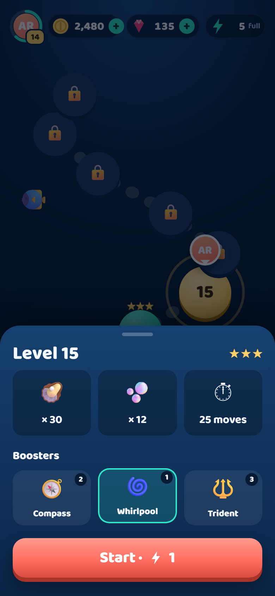
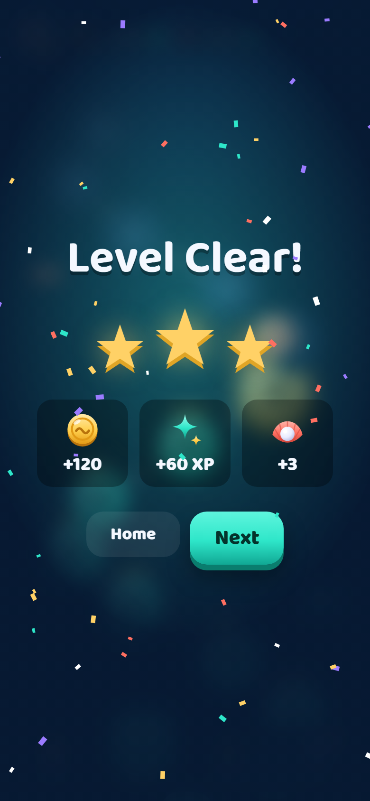
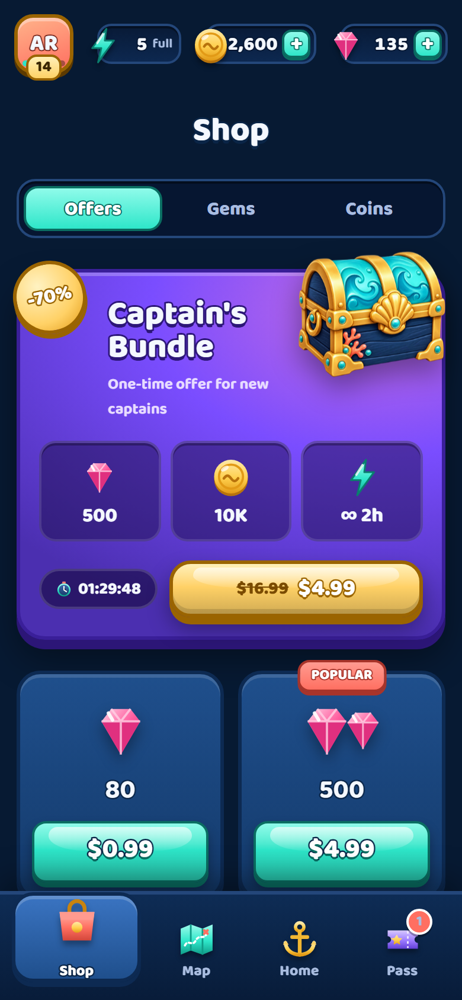
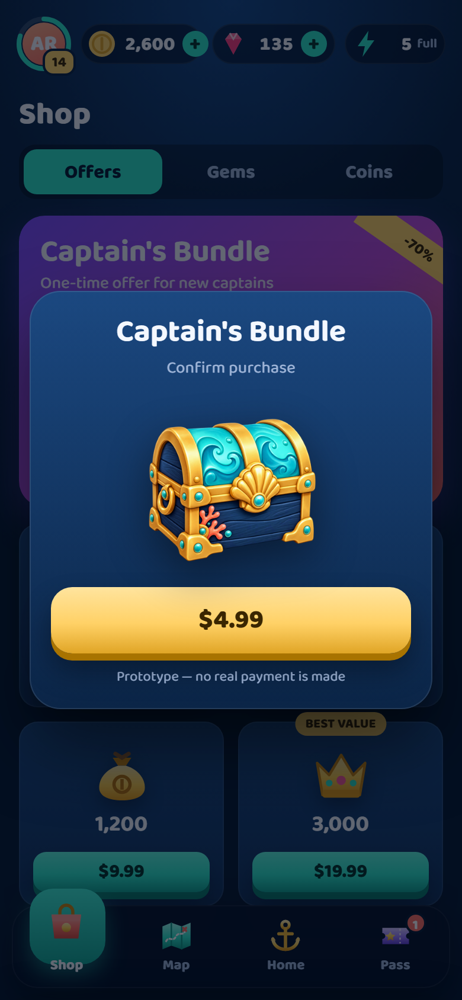
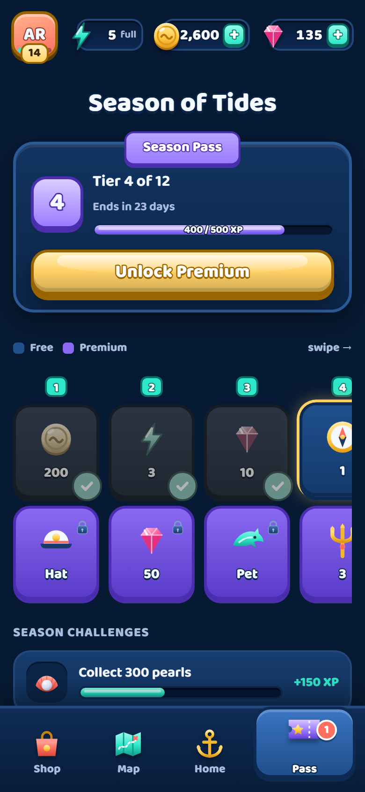

Полный игровой интерфейс уютной морской головоломки: главная с ивентами, карта уровней, старт уровня с бустерами, экран победы, магазин с офферами и покупкой, боевой пропуск. Всё кликается, анимировано и работает с телефона.







PLAY — самый крупный и контрастный элемент главной, с «дыханием» и бликом. Уровень подписан прямо на кнопке, чтобы игрок знал, куда идёт.
Монеты и кристаллы физически летят в верхнюю панель, счётчик дотикивает и «подпрыгивает». Игрок видит, откуда пришла ценность.
Экраны выезжают слева или справа в зависимости от положения вкладки. Активная вкладка поднимается на «капле», которая перетекает между пунктами.
Оффер с таймером и старой ценой, метки «Popular» и «Best value» на паках, бейдж с числом неполученных наград пропуска — всё, что двигает метрики, но без блокирующих попапов.
Пройденные уровни со звёздами, текущий пульсирует, следующие закрыты. Аватар игрока переезжает к новому уровню после победы.
Крупные зоны нажатия (от 44 px), контраст текста, учёт prefers-reduced-motion — для людей, которым анимации мешают, движение отключается.
| Элемент | Анимация | Длительность / кривая |
|---|---|---|
| Смена экранов | сдвиг 30% + fade по направлению вкладки | 420 мс · cubic-bezier(.4,0,.2,1) |
| Индикатор навигации | перетекание капли, подъём иконки | 420 мс · overshoot (.2,.9,.25,1.15) |
| Bottom sheet уровня | выезд снизу + затемнение | 450 мс / 300 мс |
| Старт уровня | «погружение»: круг раскрывается, пузыри | 600 мс + 900 мс |
| Звёзды победы | по одной: масштаб + поворот, искры, вибрация | шаг 380 мс |
| Счётчики валют | tween с ease-out cubic + bump | 800–900 мс |
| Покупка | сундук трясётся → открывается → кристаллы летят в счётчик | 1000 + 500 + 800 мс |
Сделано с ИИ. Прототип собран ИИ-агентом (Claude Code) в моём рабочем процессе: референсы и задачи → генерация → правки по скриншотам с телефона.
Так интерактивный прототип с анимациями получается за вечер, а не за неделю. Заказчик сразу трогает интерфейс на своём телефоне вместо статичных картинок.
Стек: HTML, CSS, vanilla JS; иконки — SVG и emoji; шрифт Baloo 2. Игра, названия и цены вымышлены, покупки ненастоящие.
Делаю UI/UX и интерактивные прототипы, playable-рекламу и браузерные игры.